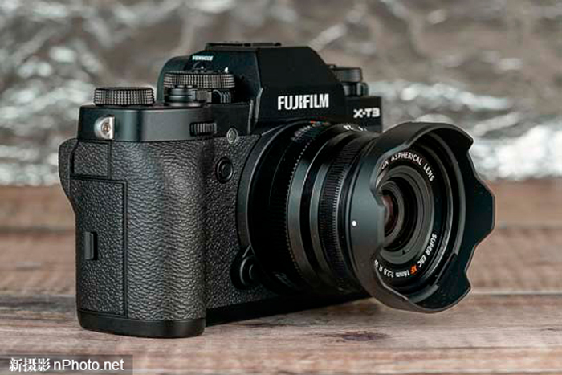

来源：新摄影网
富士XF 16mm F2.8 R WR是一款设计非常紧凑的广角定焦镜头。它自重155g，镜身长45mm，比富士自家的XF 16mm F1.4 R镜头更轻也更短一些。正如我们在下图中看到的那样，这款镜头在造型上与富士的顶级相机X-T3非常配，而且安装在这个尺寸的机身上也不会感觉太小，镜头在做工质量方面也与X-T3相机相得益彰。
富士XF 16mm F2.8 R WR镜头拥有全金属的镜头卡口、高级金属材质的镜筒和非旋转式的49mm滤镜卡口。考虑到镜头的整体尺寸并不是很大，XF 16mm F2.8 R WR的对焦环足够宽大，旋转起来阻尼平滑而且也不会松动。镜头在17cm至无限远对焦范围内的任何一端都没有“硬停止”现象。
富士XF 16mm F2.8 R WR镜头采用了防尘、防滴溅的结构，在镜桶周围的九个点都做了防风雨的密封处理，这使其成为了我们测试过的所有镜头中，X-T3相机的最佳搭档。富士XF 16mm F2.8 R WR镜头具备了内对焦（IF）系统和近乎无声的步进式对焦马达。在实践中，我们发现镜头搭配X-T3机身时的自动对焦非常快速且准确。得益于内对焦（IF）系统，镜头的前部并不会在焦点上旋转，这对于任何想要在镜头上使用偏振镜或中灰渐变镜的人来说都是个好消息。
富士XF 16mm F2.8 R WR镜头在镜筒上配备有一个传统的光圈环，能够让用户以1/3步长来设置光圈，并同时配有全光圈标记。当你通过光圈环对光圈进行调整时，光圈值也会同步显示在相机取景器或LCD屏幕上。镜头光圈环阻尼良好，而且在你改变光圈设置时会产生独特的咔哒声。更难能可贵的是，这款镜头的光圈环比我们测试的一些富士镜头上的更加牢固，即便我们把它存放在口袋或包中时也不用担心光圈环会轻易移动位置。此外，光圈环还可用于在自动光圈控制或手动光圈控制之间进行切换。